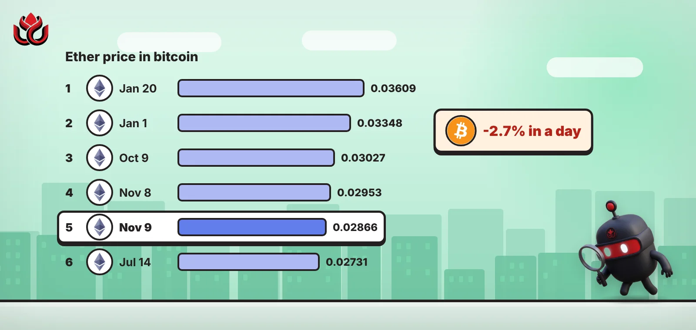
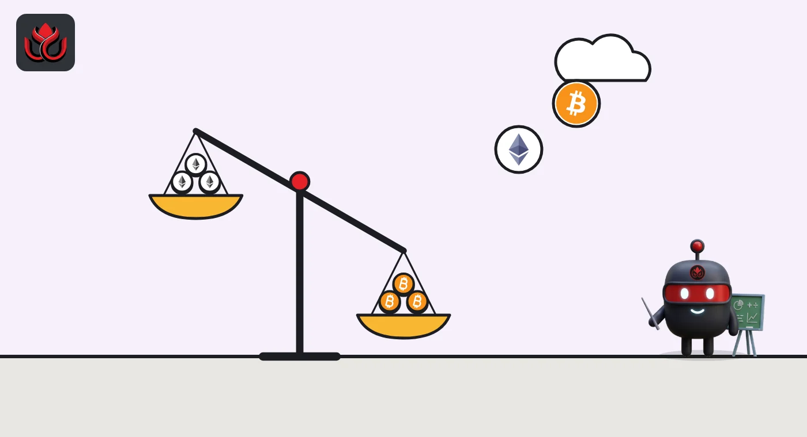

One ether now buys 0.0286 bitcoin, the least since mid-July
Ether lost 2.7% against bitcoin in a day after Sunday's sell-off. CoinGecko's daily data shows no lower close since July 14.

Key points
- At 12:43 a.m. ET on November 9, one ether was worth 0.02866 BTC on CoinGecko, down 2.7% in 24 hours. In dollars, ETH was $2,127.23 and BTC $74,301.
- CoinGecko's daily data shows no reading this low since July 14, when the ratio was 0.02731.
- The ratio was 0.03348 on January 1 and peaked at 0.03609 on January 20. Its one-year low was 0.02485 on June 7.
What moved
The ETH/BTC ratio is ether's price measured in bitcoin. It shows whether ether is doing better or worse than bitcoin, regardless of where the dollar price goes.
On CoinGecko at 12:43 a.m. ET on November 9, 2026, one ether was worth 0.02866 BTC, down 2.73% in 24 hours. Ether traded at $2,127.23, down 4.7%, and bitcoin at $74,301, down 1.9%. Ether's 24-hour loss was about two and a half times bitcoin's, and much of it came in its 4.6% drop in 20 minutes on Sunday afternoon.
The lowest since July
CoinGecko's one-year daily chart in bitcoin terms shows every daily reading from July 15 to November 8 above today's level. The last lower one was 0.02731 on July 14.
The ratio has slid for most of the year. It stood at 0.03348 on January 1, peaked at 0.03609 on January 20 and bottomed at 0.02485 on June 7. It recovered to 0.03027 by October 9, then fell to 0.02953 on November 8 before Sunday's drop pushed it lower.
Ether's price in bitcoin, selected days
BTC per ETH
Daily readings at midnight UTC, except November 9. Source: CoinGecko ETH market chart in BTC, read November 9, 2026, 12:45 a.m. ET.

Why it matters
When the ratio falls, holding ether has done worse than holding bitcoin. Futures traders are leaning the same way: negative funding, where traders betting on a fall pay those betting on a rise, now covers most of ether's open bets but almost none of bitcoin's, CoinGecko's derivatives data shows.
The ratio is not a forecast. It moved up from June to October before turning lower again, and a single day's drop can reverse. It also shows only that ether is weaker, not why.
LC Insight analysis
This section is our reading of the facts above, not a statement of fact.
- We think the ratio says more about this sell-off than the dollar prices do. Ether is taking the bigger hit, as it did on November 5.
- The June low of 0.02485 is still 13% below today's level, so the ratio has room to fall before it sets a new one-year low.
- A turn in the ratio would likely show up first in ether futures funding moving back above zero.
What's next
- Whether the ratio closes below 0.0273, its July 14 level
- Whether ether funding turns positive at Binance
- Ether's moves on days when bitcoin is flat
Disclaimer. This article is based on public information and the sources listed below as of the update time shown. It is for information only and is not investment, legal or tax advice. Figures may change as companies and authorities publish new data.